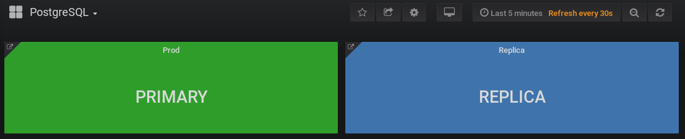
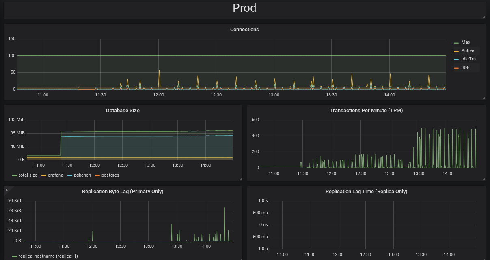

pgmonitor
pgmonitor is your all-in-one tool to easily create an environment to visualize the health and performance of your PostgreSQL cluster.
 
pgmonitor combines a suite of tools to facilitate the collection and visualization of important metrics that you need be aware of in your PostgreSQL database and your host environment, including:
- Connection counts: how busy is your system being accessed and if connections are hanging
- Database size: how much disk your cluster is using
- Replication lag: know if your replicas are falling behind in loading data from your primary
- Transaction wraparound: don’t let your PostgreSQL database stop working
- Bloat: how much extra space are your tables and indexes using
- System metrics: CPU, Memory, I/O, uptime
pgmonitor is also highly configurable, and advanced users can design their own metrics, visualizations, and add in other features such as alerting.
Running pgmonitor will give you confidence in understanding how well your PostgreSQL cluster is performing, and will provide you the information to make calculated adjustments to your environment.
Contents
Purpose
pgmonitor is an open-source monitoring solution for PostgreSQL and the systems that it runs on. pgmonitor came from the need to provide a way to easily create a visual environment to monitor all the metrics a database administrator needs to proactively ensure the health of the system.
pgmonitor combines multiple open-source software packages and necessary configuration to create a robust PostgreSQL monitoring environment. These include:
- Prometheus - an open-source metrics collector that is highly customizable.
- Grafana - an open-source data visualizer that allows you to generate many different kinds of charts and graphs.
- PostgreSQL Exporter - an open-source data export to Prometheus that supports collecting metrics from any PostgreSQL server version 9.1 and above.
Supported Platforms
Operating Systems
- Prometheus/Alertmanager & Grafana: CentOS/RHEL 7 or greater
- Exporters (node & postgres): CentOS/RHEL 6 or greater
PostgreSQL
- pgmonitor plans to support all PostgreSQL versions that are actively supported by the PostgreSQL community. Once a major version of PostgreSQL reaches its end-of-life (EOL), pgmonitor will cease supporting that major version.
- 11, 10, 9.6, 9.5, 9.4
Known issues
- PostgreSQL 10+ SCRAM-SHA-256 encrypted password are not yet supported by underlying go library used by postgres_exporter.
Installation
Each step in the installation process is listed here, with a link to additional to further installation instructions for each package.
1. Prometheus
2. exporter
3. Grafana
Roadmap
- Additional monitoring metrics out-of-the-box
- Improved visualizations
- Project build testing
Version History
For the full history of pgmonitor, please see the CHANGELOG.
Sponsors
Crunchy Data is pleased to sponsor pgmonitor and many other open-source projects to help promote support the PostgreSQL community and software ecosystem.
Legal Notices
Copyright © 2019 Crunchy Data Solutions, Inc.
CRUNCHY DATA SOLUTIONS, INC. PROVIDES THIS GUIDE “AS IS” WITHOUT WARRANTY OF ANY KIND, EITHER EXPRESS OR IMPLIED, INCLUDING, BUT NOT LIMITED TO, THE IMPLIED WARRANTIES OF NON INFRINGEMENT, MERCHANTABILITY OR FITNESS FOR A PARTICULAR PURPOSE.
Crunchy, Crunchy Data Solutions, Inc. and the Crunchy Hippo Logo are trademarks of Crunchy Data Solutions, Inc.